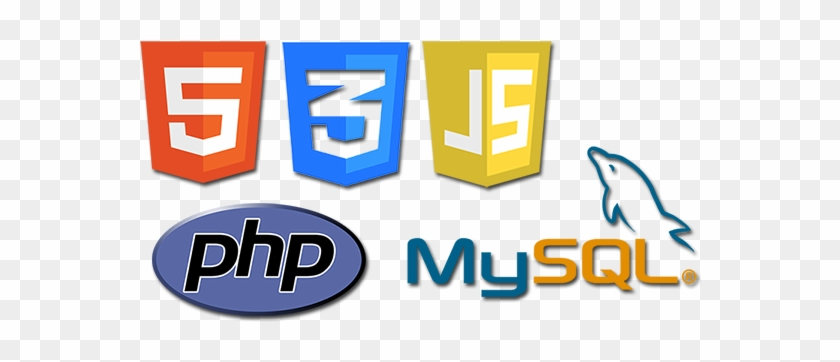
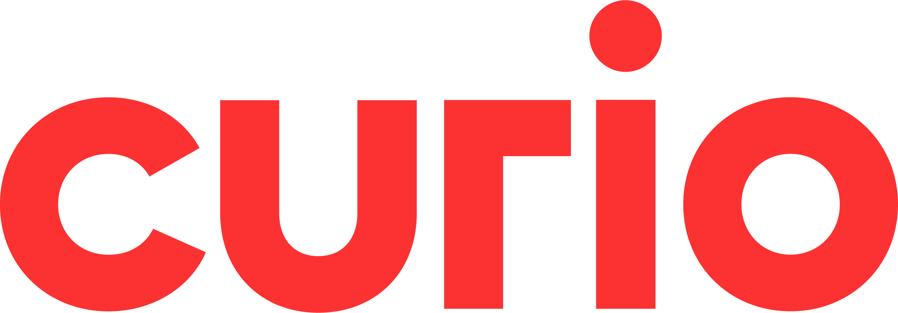

Jij bent het liefste de hele dag bezig met jouw computer. Je bent er superhandig mee. Kies dan voor een opleiding in de techniek en technologie. Leer apps zoals Snapchat ontwikkelen. Repareer kapotte computers en printers. Of onderzoek jij
de kwaliteit van het water in een lab? Ontdek alle techniek en technologie opleidingen bij Curio.
NATIVE
Je leert applicaties te bouwen die draaien op een Windows-computer. In het 1e blok gaan we eerst werken we met de programmeertaal ‘Python’. Om die taal goed te oefenen, beginnen we met programmeren op een kleiner apparaat genaamd de Microbit.
Daarna gaan we over naar Visual Studio code. In het 2e blok gaan we over naar C#.Python is een programmeertaal die enorm veelzijdig is. Van simpele scripts van slechts een paar regel code, tot grote webapplicaties met databases, het
aansturen van robots in fabrieken, software voor in auto’s, games, machine learning enzovoorts.C# (C-Sharp) is een sterk getypeerde objectgeoriënteerde programmeertaal. C# is open source, eenvoudig, modern, flexibel en veelzijdig.
PRAKTIJKWERK
Tijdens praktijkwerk werk je zelfstandig aan de praktijkopdrachten die opgeleverd zijn door jou werkgever(docenten), in ons praktijklokaal. De opdrachten kunnen bestaan uit websites maken dus met HTML, CSS en PHP, of je moet een webapplicatie
maken dus dan werk je met python of C#.de praktijk opdracht worden voor in teams aan gewerkt, zoals in het bedrijfsleven. Omdat we werken in teams maken wij gebruik van ‘GitHub’. GitHub is een online platform waarmee makkelijker je
code kan delen met je collega’s mensen en er zijn extra features
.

WEB
WEB development: Dit vak gaat over het maken van websites en webapplicaties. We beginnen simpel met de opmaaktalen HTML en CSS, in het 2e blok gaan we verder met PHP. Dat zijn de bouwstenen van een website.HTML en CSS is voor de opmaak van de site, dus
de kleuren en hoe alles netjes staat.PHP is voor de functionaliteit van de website, voor het versturen en ontvangen van informatie.SQL is om informatie te versturen naar je database en op te halen uit je database
Smoelenboek
Bart roos
Elton Boekhoudt
Vincent Hooft
Michel Meeuwesen
Wiro Verdiesen
Wicher Hulzebosch
Rooster
dit is hoe het rooster er ongeveer uit ziet.

Meeloopdag
Wil jij graag deze opleiding doen maar weet je nog niet helemaal zeker wat je moet verwachten? Loop dan een dagje mee op het curio en ervaar het zelf! Tijdens de meeloopdag krijg je eigenlijk te zien hoe zo'n dag er eigenlijk uitziet en
wat er allemaal aan bod komt. Je maakt eigenlijk voor een dag mee hoe het is om een student te zijn op het Curio als student software developer. Klinkt dit nou iets voor jou? kijk dan snel bij de meeloopdagen en plan jezelf in!